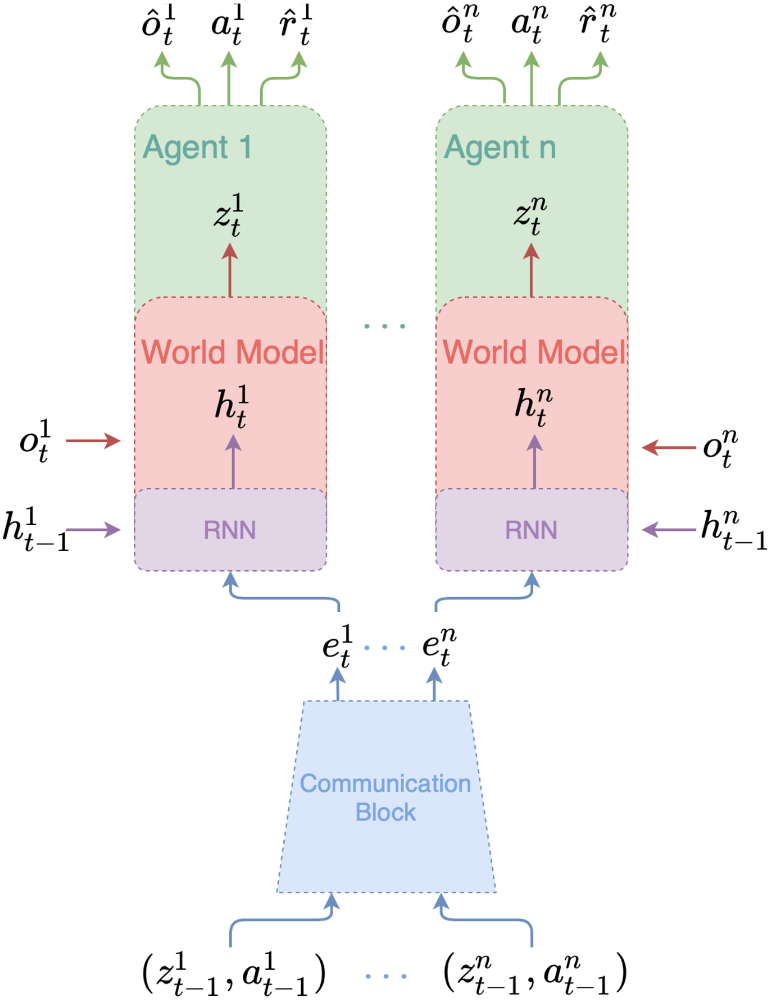
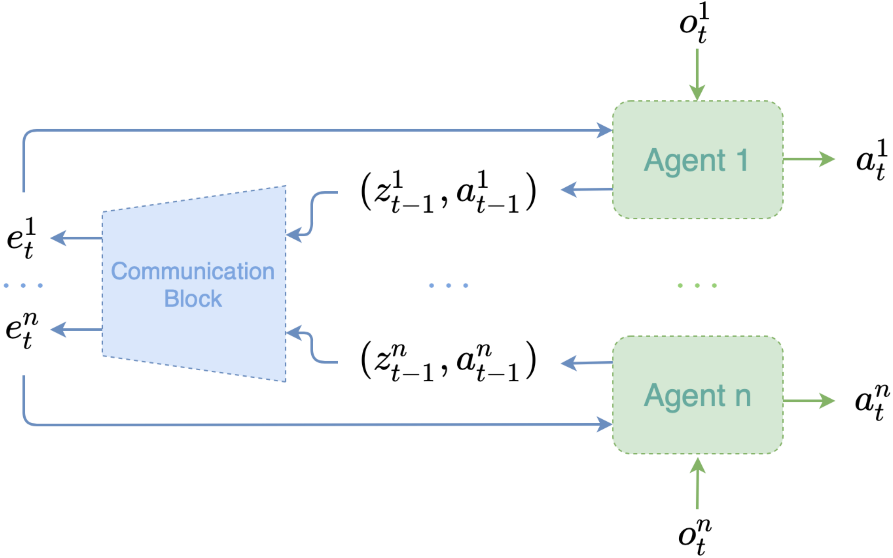

MAMBA
World Model Learning
MAMBA choose Dreamer v2 for world model representation and learning
Model
Type
Definition
Distribution Family
Recurrent Model
Generation
h t i = f ϕ ( h t − 1 i , e t i ) h_{t}^{i} = f_{\phi}(h_{t - 1}^{i},\ e_{t}^{i}) h t i = f ϕ ( h t − 1 i , e t i ) Deterministic
Communication Block
Generation
e t = g ϕ ( z t − 1 , a t − 1 ) e_{t} = g_{\phi}(z_{t - 1},\ a_{t - 1}) e t = g ϕ ( z t − 1 , a t − 1 ) Deterministic
Representation Model
Inference
z t i ∼ q ϕ ( z t i ∣ h t i , o t i ) z_{t}^{i} \sim q_{\phi}(z_{t}^{i} \mid h_{t}^{i},\ o_{t}^{i}) z t i ∼ q ϕ ( z t i ∣ h t i , o t i ) Categorical
Transition Predictor
Generation
z t i ∼ p ϕ ( z t i ∣ h t i ) z_{t}^{i} \sim p_{\phi}(z_{t}^{i} \mid h_{t}^{i}) z t i ∼ p ϕ ( z t i ∣ h t i ) Categorical
Observation Predictor
Generation
o t i ∼ p ϕ ( o t i ∣ h t i , z t i ) o_{t}^{i} \sim p_{\phi}(o_{t}^{i} \mid h_{t}^{i},\ z_{t}^{i}) o t i ∼ p ϕ ( o t i ∣ h t i , z t i )
Reward Predictor
Generation
r t i ∼ p ϕ ( r t i ∣ h t i , z t i ) r_{t}^{i} \sim p_{\phi}(r_{t}^{i} \mid h_{t}^{i},\ z_{t}^{i}) r t i ∼ p ϕ ( r t i ∣ h t i , z t i )
Discount Predictor
Generation
γ t i ∼ p ϕ ( γ t i ∣ h t i , z t i ) \gamma_{t}^{i} \sim p_{\phi}(\gamma_{t}^{i} \mid h_{t}^{i},\ z_{t}^{i}) γ t i ∼ p ϕ ( γ t i ∣ h t i , z t i ) Bernoulli
All components are optimized jointly to maximize the ELBO of the log-likelihood
ln p ϕ ( o 0 : T , r 0 : T , γ 0 : T ∣ a 0 : T − 1 ) = ln ∑ z 0 : T p ϕ ( o 0 : T , r 0 : T , γ 0 : T , z 0 : T ∣ a 0 : T − 1 ) = ln ∑ z 0 : T 1 ∑ z 0 : T 2 ⋯ ∑ z 0 : T n ∏ t = 0 T ∏ i = 1 n p ϕ ( o t i ∣ h t i , z t i ) p ϕ ( r t i ∣ h t i , z t i ) p ( γ t i ∣ h t i , z t i ) p ( z t i ∣ h t i ) q ϕ ( z t i ∣ h t i , o t i ) q ϕ ( z t i ∣ h t i , o t i ) = ln E z t i ∼ q ϕ ( z t i ∣ h t i , o t i ) [ ∏ t = 0 T ∏ i = 1 n p ϕ ( o t i ∣ h t i , z t i ) p ϕ ( r t i ∣ h t i , z t i ) p ( γ t i ∣ h t i , z t i ) p ( z t i ∣ h t i ) q ϕ ( z t i ∣ h t i , o t i ) ] ≥ E z t i ∼ q ϕ ( z t i ∣ h t i , o t i ) [ ∑ t = 0 T ∑ i = 1 n ln p ϕ ( o t i ∣ h t i , z t i ) + ln p ϕ ( r t i ∣ h t i , z t i ) + ln p ϕ ( γ t i ∣ h t i , z t i ) − ln q ϕ ( z t i ∣ h t i , o t i ) p ϕ ( z t i ∣ h t i ) ] = E z t i ∼ q ϕ ( z t i ∣ h t i , o t i ) [ ∑ t = 0 T ∑ i = 1 n ln p ϕ ( o t i ∣ h t i , z t i ) + ln p ϕ ( r t i ∣ h t i , z t i ) + ln p ϕ ( γ t i ∣ h t i , z t i ) − D K L ( q ϕ ( ⋅ ∣ h t i , o t i ) ∥ p ϕ ( ⋅ ∣ h t i ) ) ] \begin{aligned}
&\ln p_{\phi}(o_{0:\mathrm{T}},\ r_{0:\mathrm{T}},\ \gamma_{0:\mathrm{T}} \mid a_{0:\mathrm{T} - 1}) = \ln \sum_{z_{0:\mathrm{T}}} p_{\phi}(o_{0:\mathrm{T}},\ r_{0:\mathrm{T}},\ \gamma_{0:\mathrm{T}},\ z_{0:\mathrm{T}} \mid a_{0:\mathrm{T} - 1}) \\[7mm]
=\ &\ln \sum_{z_{0:\mathrm{T}}^{1}} \sum_{z_{0:\mathrm{T}}^{2}} \cdots \sum_{z_{0:\mathrm{T}}^{n}} \prod_{t = 0}^{\mathrm{T}} \prod_{i = 1}^{n} p_{\phi}(o_{t}^{i} \mid h_{t}^{i},\ z_{t}^{i}) p_{\phi}(r_{t}^{i} \mid h_{t}^{i},\ z_{t}^{i}) p(\gamma_{t}^{i} \mid h_{t}^{i},\ z_{t}^{i}) p(z_{t}^{i} \mid h_{t}^{i}) \frac{q_{\phi}(z_{t}^{i} \mid h_{t}^{i},\ o_{t}^{i})}{q_{\phi}(z_{t}^{i} \mid h_{t}^{i},\ o_{t}^{i})} \\[7mm]
=\ &\ln \mathcal{E}_{z_{t}^{i} \sim q_{\phi}(z_{t}^{i} \mid h_{t}^{i},\ o_{t}^{i})} \left[ \prod_{t = 0}^{\mathrm{T}} \prod_{i = 1}^{n} p_{\phi}(o_{t}^{i} \mid h_{t}^{i},\ z_{t}^{i}) p_{\phi}(r_{t}^{i} \mid h_{t}^{i},\ z_{t}^{i}) p(\gamma_{t}^{i} \mid h_{t}^{i},\ z_{t}^{i}) \frac{p(z_{t}^{i} \mid h_{t}^{i})}{q_{\phi}(z_{t}^{i} \mid h_{t}^{i},\ o_{t}^{i})} \right] \\[7mm]
\ge\ &\mathcal{E}_{z_{t}^{i} \sim q_{\phi}(z_{t}^{i} \mid h_{t}^{i},\ o_{t}^{i})} \left[ \sum_{t = 0}^{\mathrm{T}} \sum_{i = 1}^{n} \ln p_{\phi}(o_{t}^{i} \mid h_{t}^{i},\ z_{t}^{i}) + \ln p_{\phi}(r_{t}^{i} \mid h_{t}^{i},\ z_{t}^{i}) + \ln p_{\phi}(\gamma_{t}^{i} \mid h_{t}^{i},\ z_{t}^{i}) - \ln \frac{q_{\phi}(z_{t}^{i} \mid h_{t}^{i},\ o_{t}^{i})}{p_{\phi}(z_{t}^{i} \mid h_{t}^{i})} \right] \\[7mm]
=\ &\mathcal{E}_{z_{t}^{i} \sim q_{\phi}(z_{t}^{i} \mid h_{t}^{i},\ o_{t}^{i})} \left[ \sum_{t = 0}^{\mathrm{T}} \sum_{i = 1}^{n} \ln p_{\phi}(o_{t}^{i} \mid h_{t}^{i},\ z_{t}^{i}) + \ln p_{\phi}(r_{t}^{i} \mid h_{t}^{i},\ z_{t}^{i}) + \ln p_{\phi}(\gamma_{t}^{i} \mid h_{t}^{i},\ z_{t}^{i}) - D_{\mathrm{KL}} \Big( q_{\phi}(\cdot \mid h_{t}^{i},\ o_{t}^{i})\ \|\ p_{\phi}(\cdot \mid h_{t}^{i}) \Big) \right]
\end{aligned}
= = ≥ = ln p ϕ ( o 0 : T , r 0 : T , γ 0 : T ∣ a 0 : T − 1 ) = ln z 0 : T ∑ p ϕ ( o 0 : T , r 0 : T , γ 0 : T , z 0 : T ∣ a 0 : T − 1 ) ln z 0 : T 1 ∑ z 0 : T 2 ∑ ⋯ z 0 : T n ∑ t = 0 ∏ T i = 1 ∏ n p ϕ ( o t i ∣ h t i , z t i ) p ϕ ( r t i ∣ h t i , z t i ) p ( γ t i ∣ h t i , z t i ) p ( z t i ∣ h t i ) q ϕ ( z t i ∣ h t i , o t i ) q ϕ ( z t i ∣ h t i , o t i ) ln E z t i ∼ q ϕ ( z t i ∣ h t i , o t i ) [ t = 0 ∏ T i = 1 ∏ n p ϕ ( o t i ∣ h t i , z t i ) p ϕ ( r t i ∣ h t i , z t i ) p ( γ t i ∣ h t i , z t i ) q ϕ ( z t i ∣ h t i , o t i ) p ( z t i ∣ h t i ) ] E z t i ∼ q ϕ ( z t i ∣ h t i , o t i ) [ t = 0 ∑ T i = 1 ∑ n ln p ϕ ( o t i ∣ h t i , z t i ) + ln p ϕ ( r t i ∣ h t i , z t i ) + ln p ϕ ( γ t i ∣ h t i , z t i ) − ln p ϕ ( z t i ∣ h t i ) q ϕ ( z t i ∣ h t i , o t i ) ] E z t i ∼ q ϕ ( z t i ∣ h t i , o t i ) [ t = 0 ∑ T i = 1 ∑ n ln p ϕ ( o t i ∣ h t i , z t i ) + ln p ϕ ( r t i ∣ h t i , z t i ) + ln p ϕ ( γ t i ∣ h t i , z t i ) − D K L ( q ϕ ( ⋅ ∣ h t i , o t i ) ∥ p ϕ ( ⋅ ∣ h t i ) ) ]
To encourage the latent state to depend mostly on its own actions, and further allow the distanglement of latent states, the mutual information I ( h t i , z t i ; a t − 1 i ) I(h_{t}^{i},\ z_{t}^{i};\ a_{t - 1}^{i}) I ( h t i , z t i ; a t − 1 i )
max ϕ I ( h t i , z t i ; a t − 1 i ) ≥ E ( h t i , z t i , a t − 1 i ) ∼ p ϕ ln q ϕ ( a t − 1 i ∣ h t i , z t i ) + H ( h t i , z t i ) ⇒ max ϕ E ( h t i , z t i , a t − 1 i ) ∼ p ϕ ln q ϕ ( a t − 1 i ∣ h t i , z t i ) \max_{\phi} I(h_{t}^{i},\ z_{t}^{i};\ a_{t - 1}^{i}) \ge \mathcal{E}_{(h_{t}^{i},\ z_{t}^{i},\ a_{t - 1}^{i}) \sim p_{\phi}} \ln q_{\phi}(a_{t - 1}^{i} \mid h_{t}^{i},\ z_{t}^{i}) + \mathcal{H}(h_{t}^{i},\ z_{t}^{i}) \Rightarrow \max_{\phi} \mathcal{E}_{(h_{t}^{i},\ z_{t}^{i},\ a_{t - 1}^{i}) \sim p_{\phi}} \ln q_{\phi}(a_{t - 1}^{i} \mid h_{t}^{i},\ z_{t}^{i})
ϕ max I ( h t i , z t i ; a t − 1 i ) ≥ E ( h t i , z t i , a t − 1 i ) ∼ p ϕ ln q ϕ ( a t − 1 i ∣ h t i , z t i ) + H ( h t i , z t i ) ⇒ ϕ max E ( h t i , z t i , a t − 1 i ) ∼ p ϕ ln q ϕ ( a t − 1 i ∣ h t i , z t i )

Behavior Learning
The actor π ψ ( a t i ∣ z t i , h t i ) \pi_{\psi}(a_{t}^{i} \mid z_{t}^{i},\ h_{t}^{i}) π ψ ( a t i ∣ z t i , h t i ) v η i ( z t ) v_{\eta}^{i}(z_{t}) v η i ( z t )

During execution, agents need to broadcast their stochastic state z t − 1 i z_{t - 1}^{i} z t − 1 i a t − 1 i a_{t - 1}^{i} a t − 1 i e t i e_{t}^{i} e t i
Communication
The communication block applies self-attention mechanism to process sequential state-action tuples
e t i = softmax ( 1 d Q ( z t i , a t i ) ⋅ K ( z t 1 : n , a t 1 : n ) ) ⋅ V ( z t 1 : n , a t 1 : n ) e_{t}^{i} = \operatorname{softmax} \left( \frac{1}{\sqrt{d}} Q(z_{t}^{i},\ a_{t}^{i}) \cdot K(z_{t}^{1:n},\ a_{t}^{1:n}) \right) \cdot V(z_{t}^{1:n},\ a_{t}^{1:n})
e t i = s o f t m a x ( d 1 Q ( z t i , a t i ) ⋅ K ( z t 1 : n , a t 1 : n ) ) ⋅ V ( z t 1 : n , a t 1 : n )
With the setting of locality, agents may only receive messages from its neighbours U ( i ) U(i) U ( i )
e t i = softmax ( 1 d Q i ( z t , a t ) ⋅ K ( z t U ( i ) , a t U ( i ) ) ) ⋅ V ( z t U ( i ) , a t U ( i ) ) e_{t}^{i} = \operatorname{softmax} \left( \frac{1}{\sqrt{d}} Q^{i}(z_{t},\ a_{t}) \cdot K(z_{t}^{U(i)},\ a_{t}^{U(i)}) \right) \cdot V(z_{t}^{U(i)},\ a_{t}^{U(i)})
e t i = s o f t m a x ( d 1 Q i ( z t , a t ) ⋅ K ( z t U ( i ) , a t U ( i ) ) ) ⋅ V ( z t U ( i ) , a t U ( i ) )
The sparsity and low dimension of stochastic state can alleviate the limitation of the communication bandwidth